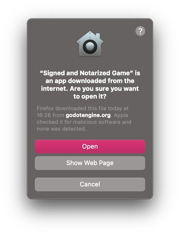
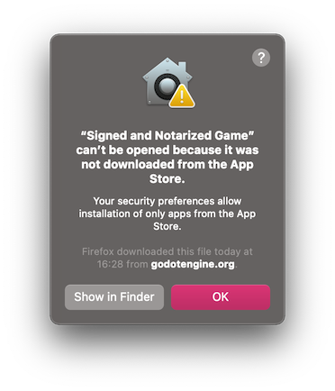
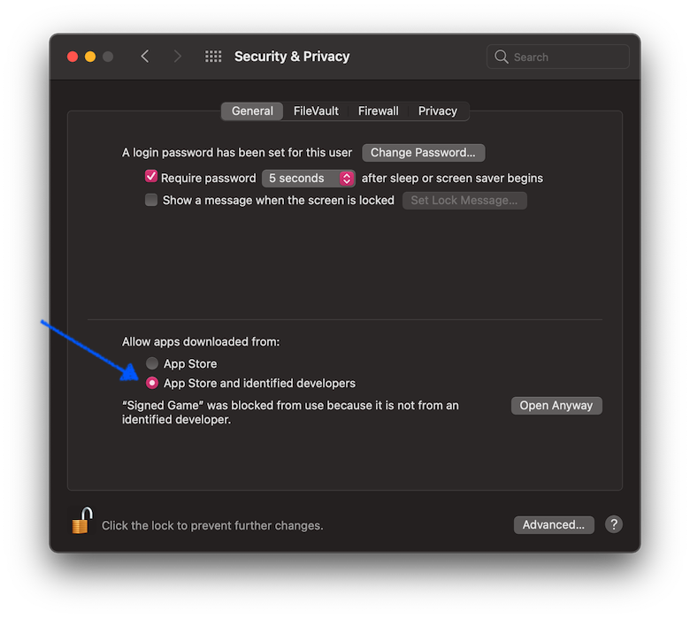
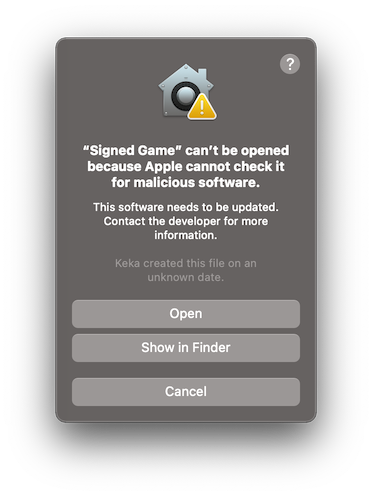
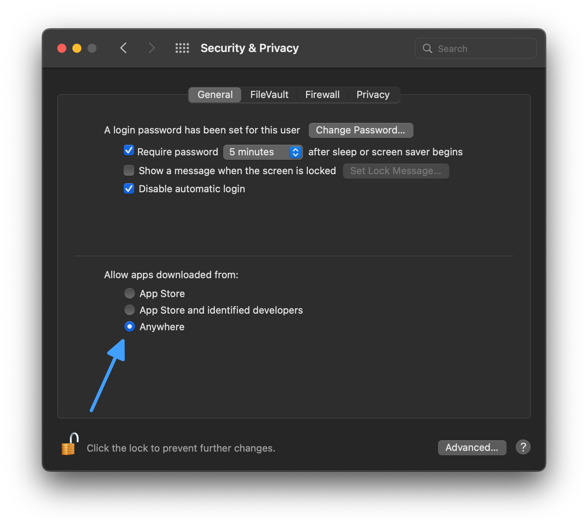
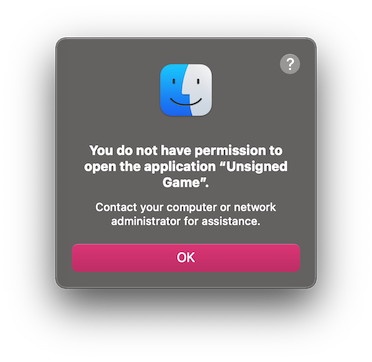

Chạy ứng dụng Godot trên macOS
Xem thêm
Trang này trình bày cách chạy dự án Godot trên macOS. Nếu bạn chưa xuất dự án, hãy đọc Xuất cho macOS trước.
Theo mặc định, macOS chỉ chạy các ứng dụng đã được ký và notarize.
Ghi chú
Khi chạy ứng dụng từ thư mục Downloads hoặc khi ứng dụng vẫn đang bị cách ly (quarantine), Gatekeeper sẽ thực hiện ngẫu nhiên hóa đường dẫn (path randomization) như một biện pháp bảo mật. Điều này làm hỏng việc truy cập các đường dẫn tương đối từ ứng dụng, thứ mà ứng dụng cần để hoạt động. Để khắc phục, hãy chuyển ứng dụng vào thư mục /Applications.
Nhìn chung, ứng dụng macOS nên tránh phụ thuộc vào các đường dẫn tương đối từ thư mục ứng dụng.
Tùy vào cách một ứng dụng macOS được ký và phân phối, có thể xảy ra các tình huống sau:
Ứng dụng đã được ký, notarize và phân phối qua App Store
Ghi chú
Nhà phát triển ứng dụng cần tham gia Apple Developer Program, cấu hình các tùy chọn ký và notarize khi xuất, rồi tải ứng dụng lên App Store.
Ứng dụng sẽ chạy ngay mà không cần người dùng thao tác thêm.
Ứng dụng đã được ký, notarize và phân phối bên ngoài App Store
Ghi chú
Nhà phát triển ứng dụng cần tham gia Apple Developer Program, cấu hình các tùy chọn ký và notarize khi xuất, rồi phân phối ứng dụng dưới dạng tệp ".DMG" hoặc ".ZIP".
Khi bạn chạy ứng dụng lần đầu, hộp thoại sau sẽ hiển thị:

Nhấn Open để khởi động ứng dụng.
Nếu bạn thấy hộp thoại cảnh báo sau, máy Mac của bạn đang được thiết lập chỉ cho phép ứng dụng từ App Store.

Để cho phép ứng dụng bên thứ ba, hãy mở System Preferences, nhấn Security & Privacy, rồi nhấn General, mở khóa cài đặt và chọn App Store and identified developers.

Ứng dụng đã được ký (kể cả chữ ký ad-hoc) nhưng chưa notarize
Ghi chú
Nhà phát triển ứng dụng đã dùng chứng chỉ tự ký hoặc ký ad-hoc (hành vi mặc định của Godot với dự án đã xuất).
Khi bạn chạy ứng dụng lần đầu, hộp thoại sau sẽ hiển thị:

Để chạy ứng dụng này, bạn có thể tạm thời vượt qua Gatekeeper:
Hoặc mở
System Preferences, nhấnSecurity & Privacy, rồi nhấnGeneral, và nhấnOpen Anyway.
Hoặc nhấp chuột phải (Control-click) vào biểu tượng ứng dụng trong cửa sổ Finder và chọn
Opentừ menu.
Sau đó nhấn
Opentrong hộp thoại xác nhận.
Nhập mật khẩu nếu được yêu cầu.
Một lựa chọn khác là tắt hoàn toàn Gatekeeper. Lưu ý rằng điều này sẽ làm giảm bảo mật cho máy tính của bạn vì cho phép chạy bất kỳ phần mềm nào. Để làm vậy, hãy chạy sudo spctl --master-disable trong Terminal, nhập mật khẩu, khi đó tùy chọn Anywhere sẽ khả dụng:

Lưu ý rằng Gatekeeper sẽ tự bật lại khi macOS cập nhật.
Ứng dụng chưa được ký, tệp thực thi được ký bởi linker
Ghi chú
Ứng dụng được build bằng export template chính thức nhưng chưa được ký.
Khi bạn chạy ứng dụng lần đầu, hộp thoại sau sẽ hiển thị:

Để chạy ứng dụng này, bạn cần gỡ thủ công thuộc tính mở rộng quarantine của tệp:
Mở
Terminal.app(nhấn Cmd + Space và nhậpTerminal).Điều hướng tới thư mục chứa ứng dụng cần chạy.
Dùng lệnh
cd path_to_the_app_folder, ví dụcd ~/Downloads/nếu ứng dụng nằm trong thư mụcDownloads.Chạy lệnh
xattr -dr com.apple.quarantine "Unsigned Game.app"(bao gồm cả dấu ngoặc kép và phần mở rộng.app).
Cả ứng dụng lẫn tệp thực thi đều chưa được ký (chỉ liên quan đến máy Mac Apple Silicon)
Ghi chú
Ứng dụng được build bằng export template tùy chỉnh, biên dịch bằng OSXCross, và hoàn toàn chưa được ký.
Khi bạn chạy ứng dụng lần đầu, hộp thoại sau sẽ hiển thị:

Để chạy ứng dụng này, bạn có thể tự ký ad-hoc cho nó:
Cài
Xcodetừ App Store, khởi động nó và xác nhận cài đặt command line tools.Mở
Terminal.app(nhấn Cmd + Space và nhậpTerminal).Điều hướng tới thư mục chứa ứng dụng cần chạy.
Dùng lệnh
cd path_to_the_app_folder, ví dụcd ~/Downloads/nếu ứng dụng nằm trong thư mụcDownloads.Chạy các lệnh sau:
xattr -dr com.apple.quarantine "Unsigned Game.app"(bao gồm cả dấu ngoặc kép và phần mở rộng ".app").codesign -s - --force --deep "Unsigned Game.app"(bao gồm cả dấu ngoặc kép và phần mở rộng ".app").